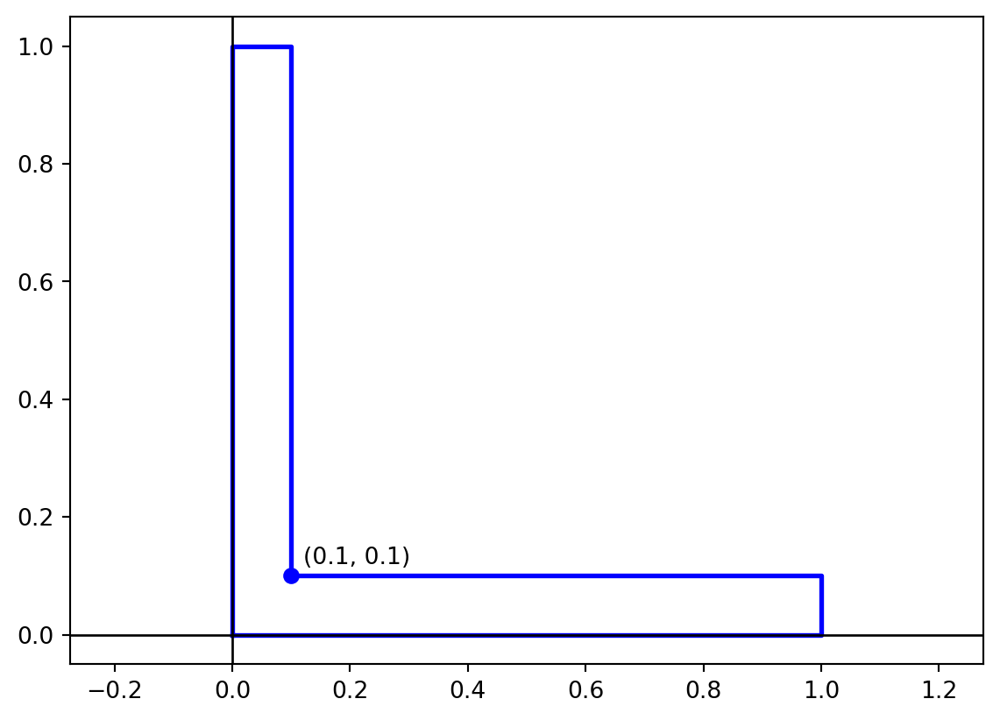
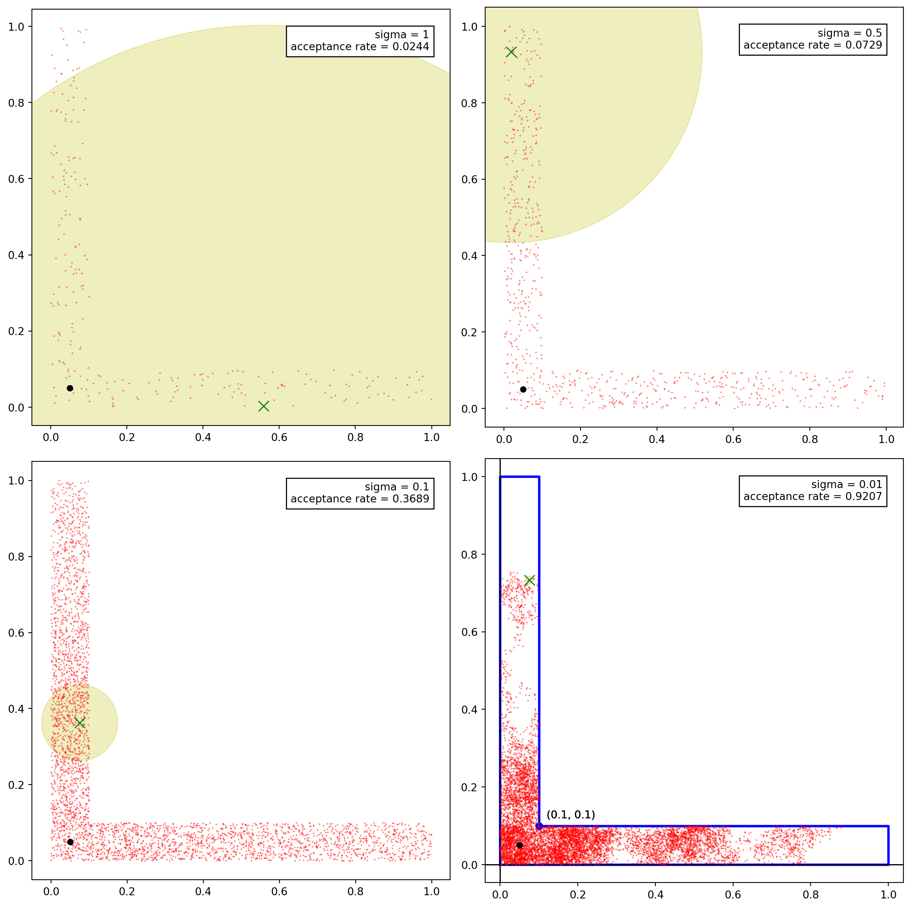

VM =window.VM// vmTheme re-runs every cell that bakes a palette color into a trace when// the reader toggles dark mode; chartColors is that palette.vmTheme = Generators.observe(notify => VM.plotting.onThemeChange(notify))chartColors = VM.plotting.colors(vmTheme)
Metropolis–Hastings algorithm is a Markov Chain Monte Carlo (MCMC) method used to sample from a probability distribution. It is a type of a rejection sampling algorithm where we generate a sequence of samples from a target distribution by proposing a new sample and accepting or rejecting it based on a certain criterion. The algorithm is widely used in Bayesian statistics, statistical physics, and machine learning.
We’ll start a few examples to understand the algorithm and then discuss the general algorithm.
11.1 Random Walks Metropolis–Hastings Algorithm
Consider a region \(\Omega\) in \(\mathbb{R}^n\). Suppose we want to sample uniformly from this region. One way to do this is through rejection sampling. We envelope the region in simple shape like a cube and sample uniformly from the cube. If the sample lies in the region \(\Omega\), we accept it, otherwise we reject it. The efficiency of this method depends on the ratio of the volume of the cube to the volume of the region \(\Omega\). If the region is highly non-convex, this ratio can be very small and the rejection sampling can be very inefficient.
An alternative method is to use random walks. We start at a point \(x_0\) in the region \(\Omega\) and take a random step in a random direction. If the new point \(x_1\) is in the region \(\Omega\), we accept it, otherwise we stay at the point \(x_0\). We repeat this process to generate a sequence of points. This method is more efficient than rejection sampling for highly non-convex regions.
The rationale behind this is that if a point is in the region \(\Omega\), then a point near it is also likely to be in the region. We can use this idea to sample from a probability distribution. The random walk Metropolis–Hastings algorithm for generating \(N\) samples from a region \(\Omega\) is as follows:
Start at a point \(x_0\) in the region \(\Omega\).
For \(i = 0, 1, \ldots, N-1\):
Generate a random step \(\sigma x\).
Compute the new point \(y\)near\(x_i\).
If \(y\) is in the region \(\Omega\),
Set \(x_{i+1} = y\).
Else,
Set \(x_{i+1} = x_i\).
Return the sequence of points \(x_0, x_1, \ldots, x_{N-1}\).
This is an example of a Metropolis–Hastings algorithm. The acceptance criterion is that the new point \(y\) should be in the region \(\Omega\).
11.1.1 Proposal Distribution
The missing piece in the above algorithm is the method to generate a new point \(y\) near the current point \(x_i\). This is done using a proposal distribution. The proposal distribution can be almost of any form, but it should be easy to sample from. The choice of the proposal distribution is crucial for the efficiency of the algorithm. A good proposal distribution should be able to explore the region \(\Omega\) efficiently.
In the case of random walks, there are two common choices for the proposal distribution:
Gaussian proposal: We sample a new point from a Gaussian distribution centered at the current point \(x_i\) with a certain variance.
Uniform proposal: We sample a new point from a uniform distribution in a neighborhood of the current point \(x_i\).
Example 11.1 Consider the L-shaped region in \(\mathbb{R}^2\) as shown below. This is a non-convex region and rejection sampling would only provide an efficiency of \(0.1 + 0.1 - 0.01 = 0.18\). We’ll use the Metropolis–Hastings algorithm to sample from this region with higher efficiency.

The images below show scatter plots for the samples generated using the Metropolis–Hastings algorithm with four different choices of the Gaussian proposal distribution with standard deviations \(1\), \(0.5\), \(0.2\), and \(0.01\).

Try it yourself below. Pick a region and a proposal, then try a few step sizes: small steps are almost always accepted but crawl, large steps explore quickly but are mostly rejected (the red crosses). The shaded patch around the current point is the proposal – a disc of radius \(\sigma\) for the Gaussian, the square \([-\sigma, \sigma]^2\) around the point for the uniform.
rwMaxN =5000rwDefaults = ({seed:1,n:300,sigma:0.2,region:"L-shape",proposal:"Gaussian"})// Each region: membership test, outline (null-separated polyline), a// starting point inside it, fixed axis ranges, and the uniform// distribution's mean -- the value the running averages below converge to.rwRegions = {const circle = (cx, cy, r) => {const xs = [], ys = []for (let k =0; k <=120; k++) { xs.push(cx + r *Math.cos(2*Math.PI* k /120)) ys.push(cy + r *Math.sin(2*Math.PI* k /120)) }return {xs, ys} }const left =circle(-1,0,1)const right =circle(1,0,1)returnnewMap([ ["L-shape", {inside: (x, y) => (x >=0&& x <=1&& y >=0&& y <=0.1) || (x >=0&& x <=0.1&& y >=0&& y <=1),outlineX: [0,1,1,0.1,0.1,0,0],outlineY: [0,0,0.1,0.1,1,1,0],start: [0.05,0.05],// Extra room on the left: the legend floats over the chart's top-left// corner, which is where the L's vertical arm would otherwise be.xRange: [-0.6,1.1],yRange: [-0.1,1.1],// Area 0.19: the two arms' means weighted by area.mean: [(0.1*0.5+0.09*0.05) /0.19, (0.1*0.5+0.09*0.05) /0.19] }], ["Two discs", {inside: (x, y) => (x +1) * (x +1) + y * y <=1|| (x -1) * (x -1) + y * y <=1,outlineX: [...left.xs,null,...right.xs],outlineY: [...left.ys,null,...right.ys],start: [-1,0],xRange: [-2.2,2.2],yRange: [-1.3,1.3],mean: [0,0] }] ])}rwTraceOptions = ["Region","Path","Samples","Rejected proposals","Proposal","Current point"]rwTraceColors =newMap([ ["Region", chartColors.ink], ["Path", chartColors.muted], ["Samples", chartColors.fn], ["Rejected proposals", chartColors.alt], ["Proposal", chartColors.warn], ["Current point", chartColors.ok]])
// A typed value rather than a slider: the step size is a setting to// compare a few chosen values of (the chapter's 1, 0.5, 0.2, 0.01), not// something to scrub through.viewof rwSigmaInput = Inputs.text({label:"Step size σ",value:String(VM.ui.urlParam("rw_sigma", rwDefaults.sigma)),placeholder:"Example: 0.2, 1, 0.01"})
viewof rwRedraw = {const button = Inputs.button("Run a new chain", {value:0,reduce: v => v +1}) button.classList.add("ojs-auto")return button}
// rwSigma parses the step-size field; anything unusable (empty, zero,// negative, mid-typing) falls back to the default.rwSigma = {const parsed = VM.expressions.makeNumber(window.math, rwSigmaInput)if (parsed ===null||!Number.isFinite(parsed) || parsed <=0) return rwDefaults.sigmareturnMath.min(5, parsed)}
// rwChain: rwMaxN steps of the random walk, rerun whenever the region,// proposal, step size or seed changes. The same seed gives the same// underlying random numbers, so changing the step size shows the "same"// walk taking bigger or smaller steps. The N slider only picks how much of// it to show.rwChain = VM.mcmc.randomWalkMetropolis({logDensity: p => (rwRegion.inside(p[0], p[1]) ?0:-Infinity),start: rwRegion.start,n: rwMaxN,scale: rwSigma,proposal: rwProposal ==="Gaussian"?"gaussian":"uniform",rng: VM.sampling.seededRandom(rwSeed)})
The running averages of \(x\) and \(y\) should settle on the region’s mean (dashed); the autocorrelation function shows how many steps the chain needs to forget where it was. A slowly decaying ACF means a small effective sample size.
Notice that there is a tradeoff between the acceptance rate and the rate of convergence. In the above example,
The proposal distribution with \(\sigma = 1\) has the lowest acceptance rate but the samples are well spread out and the underlying markov chain converges quickly.
The proposal distribution with \(\sigma = 0.01\) has the highest acceptance rate but the samples are clustered and the underlying markov chain converges slowly. In the above simulation, even after \(10^5\) samples (most of which are accepted), the samples are still clustered.
Both of these are undesirable. We need to choose a proposal distribution that has a good balance between the acceptance rate and the rate of convergence.
We see that for \(\sigma = 0.5\), the samples are well spread out and the underlying markov chain converges quickly to the target distribution. This is a good choice for the proposal distribution. However, the acceptance rate is \(0.07\) which is lower than the acceptance rate for naive rejection sampling AND the generated samples are correlated. It is better to use rejection sampling than to use this proposal distribution.
For \(\sigma = 0.2\), the acceptance rate is \(0.3\) which is better than the acceptance rate for naive rejection sampling. The samples are well spread out and the underlying markov chain converges quickly, although not as quickly as for \(\sigma = 0.5.\) For this example, \(\sigma = 0.2\) is a good choice for the proposal distribution. We can fine tune this parameter to get a better acceptance rate, if needed.
11.2 Metropolis–Hastings Algorithm
The general algorithm for the Metropolis–Hastings algorithm is an algorithm for generating a sequence of samples from a probability distribution \(p(x)\).
11.2.1 Structure of Metropolis–Hastings Algorithm
The above example illustrates the general structure of the Metropolis–Hastings algorithm for sampling from a probability distribution \(p(x)\). The algorithm is as follows:
Initialization: Start at a point \(x_0\).
For \(i = 0, 1, \ldots, N-1\):
Generate a proposal \(y\) close to \(x_i\).
Evaluate the acceptance ratio \(\alpha (y | x_i)\).
Accept \(y\) with probability \(\alpha (y | x_i)\).
If accepted, set \(x_{i+1} = y\).
Else, set \(x_{i+1} = x_i\).
Return the sequence of points \(x_0, x_1, \ldots, x_{N-1}\).
11.2.2 Proposal Distribution
For the MH algorithm, we need to specify a proposal distribution for generating “nearby points”. This is a joint distribution \(q(x, y)\) for two random variables \(X\) and \(Y\). However, for running the algorithm we only need the conditional distribution \(q(y | x)\). As such, it’s more common to say that the proposal distribution is the conditional distribution \(q(y | x)\). We think of \(x\) as the current point and \(y\) as the proposed point so that the proposal distribution \(q(y | x)\) is the distribution of the proposed point \(y\) given the current point \(x\).
In the Example 11.1, the proposal distribution \(q(y|x)\) was a Gaussian distribution centered at \(x\) with a chosen variance,
The proposal distribution can be any distribution that is easy to sample from. The choice of the proposal distribution is crucial for the efficiency of the algorithm.
11.2.3 Acceptance Criterion
Once we generate a proposal \(y\), we need to evaluate an acceptance criterion for \(w\). The acceptance criterion is based on the ratio of the target distribution \(p(x)\) and the proposal distribution \(q(y | x)\). We calculate the acceptance ratio as
The Metropolis algorithm is a special case of the Metropolis–Hastings algorithm where the proposal distribution is symmetric. The Metropolis algorithm is widely used in practice. The algorithm is as follows:
Initialization: Start at a point \(x_0\).
For \(i = 0, 1, \ldots, N-1\):
Generate a proposal \(y \sim q(y | x_i)\).
If \(p(y) \geq p(x_i)\),
Set \(x_{i+1} = y\).
Else,
Generate a random number \(u \sim \text{Uniform}(0, 1)\).
If \(u < p(y) / p(x_i)\),
Set \(x_{i+1} = y\).
Else,
Set \(x_{i+1} = x_i\).
Return the sequence of points \(x_0, x_1, \ldots, x_{N-1}\).
Example 11.2 Take the standard normal target \(p(x) \propto e^{-x^2/2}\) and the uniform proposal \(y \sim \text{Uniform}(x_i - d, x_i + d)\), which is symmetric. A proposal toward the mode (\(p(y) \ge p(x_i)\)) is always accepted; one away from it is accepted with probability \(p(y)/p(x_i) = e^{(x_i^2 - y^2)/2}\). Below, the left panel is the trace \(x_0, x_1, \ldots\) with the rejected proposals marked, and the right panel the histogram of the samples against the target density.
mhDefaults = ({seed:1,n:100,d:2,max:"500"})mhTraceOptions = ["Chain","Rejected proposals","Histogram","Target N(0, 1)"]mhTraceColors =newMap([ ["Chain", chartColors.fn], ["Rejected proposals", chartColors.alt], ["Histogram", VM.plotting.alpha("accent3",0.55)], ["Target N(0, 1)", chartColors.ink]])// The y-axis (sample value) is fixed at +-4.5 for every chain, so neither// slider rescales it; the histogram shares it.mhYRange = [-4.5,4.5]
// Always-live, like the sliders: it sets the step slider's range and the// trace's x-axis, so a long run and a short one each fill the chart.viewof mhMaxInput = {const input = Inputs.text({label:"Max N",value:String(VM.ui.urlParam("mh_max", mhDefaults.max)),placeholder:"Example: 500, 5000"})return input}
viewof mhRedraw = {const button = Inputs.button("Run a new chain", {value:0,reduce: v => v +1}) button.classList.add("ojs-auto")return button}
// mhMax parses the Max N field, falling back to 500 on anything unusable.mhMax = {const parsed = VM.expressions.makeNumber(window.math, mhMaxInput)if (parsed ===null||!Number.isFinite(parsed)) return500returnMath.min(20000,Math.max(20,Math.round(parsed)))}
// mhChain: mhMax states of the chain from x0 = 0. The same seed reuses the// same random numbers, so dragging d shows the same chain with a wider or// narrower proposal.mhChain = {const run = VM.mcmc.randomWalkMetropolis({logDensity: p =>-0.5* p[0] * p[0],start: [0],n: mhMax,scale: mhD,proposal:"uniform",rng: VM.sampling.seededRandom(mhSeed) })const samples = []for (const s of run.samples) samples.push(s[0])return {samples,proposals: run.proposals,accepted: run.accepted}}
mhView = {const n =Math.min(mhN, mhMax)const samples = mhChain.samples.slice(0, n)let acceptedSteps =0let sum =0for (let t =0; t < n; t++) {if (t >0&& mhChain.accepted[t]) acceptedSteps++ sum += samples[t] }const mean = sum / nlet sumSq =0for (const x of samples) sumSq += (x - mean) * (x - mean)return {n, samples, acceptedSteps, mean,sd:Math.sqrt(sumSq / n)}}
{const steps = mhView.n-1let rate =0if (steps >0) rate = mhView.acceptedSteps/ stepsreturn VM.ui.statRow([ {label:"Samples N",value: mhView.n.toLocaleString()}, {label:"Acceptance rate",value:`${(100* rate).toFixed(1)}%`,title:`${mhView.acceptedSteps} of ${steps} proposals accepted`}, {label:"ESS",value: VM.mcmc.effectiveSampleSize(mhView.samples).toFixed(1),title:"Effective sample size: how many independent draws the correlated chain is worth"}, {label:"Mean (target 0)",value: mhView.mean.toFixed(3)}, {label:"SD (target 1)",value: mhView.sd.toFixed(3)} ])}
A tiny \(d\) gives an acceptance rate near 100% but a chain that barely moves: the ACF decays slowly and the effective sample size is a small fraction of \(N\). A huge \(d\) rejects almost everything, and the chain sits still for long stretches. The effective sample size is largest in between.
Example 11.3 If \(p(x)\) is a uniform distribution over the region \(\Omega\), then the Metropolis algorithm reduces to the random walk Metropolis–Hastings algorithm. In this case, the acceptance ratio becomes
This means that we always accept a proposal \(y\) if it is in the region \(\Omega\) and reject it otherwise. This is equivalent to the random walk Metropolis–Hastings algorithm in Section 11.1.
Several other algorithms, such as rejection sampling, random walks on graphs, and Gibbs sampling, can be viewed as special cases of the Metropolis–Hastings algorithm.
11.4 Metropolis Algorithm for Symmetric Proposals
When the proposal distribution is symmetric, i.e., \(q(y | x) = q(x | y)\), the Metropolis-Hastings algorithm simplifies to the Metropolis algorithm. We analyze this case for a target distribution \(p(x)\) defined over a finite sample space \(\Omega\).
The transition matrix for the Markov chain is given by
\[
\begin{aligned}
\mathbb{P}(X = b | X = a) = \begin{cases}
q(b | a) \min\left(1, \frac{p(b)}{p(a)}\right) & \text{if } a \neq b, \\
1 - \sum_{c \neq a} q(c | a) \min\left(1, \frac{p(c)}{p(a)}\right) & \text{if } a = b.
\end{cases}
\end{aligned}
\]
This can be equivalently written as:
\[
\begin{aligned}
\mathbb{P}(X = b | X = a) = \begin{cases}
q(b | a) & \text{if } p(b) \geq p(a) \text{ and } a \neq b, \\
q(b | a) \cdot \frac{p(b)}{p(a)} & \text{if } p(b) < p(a) \text{ and } a \neq b, \\
q(a | a) + \sum_{c: p(c) < p(a)} q(c | a) \left(1 - \frac{p(c)}{p(a)}\right) & \text{if } a = b.
\end{cases}
\end{aligned}
\]
To verify this defines a valid transition matrix, we check that transition probabilities sum to 1:
\[
\begin{aligned}
\sum_{b \in \Omega} \mathbb{P}(X = b | X = a)
&= \sum_{b \neq a} q(b | a) \min\left(1, \frac{p(b)}{p(a)}\right) + \left[1 - \sum_{c \neq a} q(c | a) \min\left(1, \frac{p(c)}{p(a)}\right)\right] \\
&= 1.
\end{aligned}
\]
11.4.1 Detailed Balance and Reversibility
Theorem 11.1 The Metropolis algorithm with symmetric proposals satisfies the detailed balance equations with respect to the target distribution \(p(x)\):
\[
p(a) \cdot \mathbb{P}(X = b | X = a) = p(b) \cdot \mathbb{P}(X = a | X = b).
\]
Proof. For \(a = b\), the equation trivially holds. For \(a \neq b\), we verify:
Since \(q(b | a) = q(a | b)\) by symmetry, we have:
\[
\begin{aligned}
p(a) \cdot \mathbb{P}(X = b | X = a)
&= p(a) \cdot q(b | a) \cdot \min\left(1, \frac{p(b)}{p(a)}\right) \\
&= q(b | a) \cdot \min(p(a), p(b)) \\
&= q(a | b) \cdot \min(p(b), p(a)) \\
&= p(b) \cdot q(a | b) \cdot \min\left(1, \frac{p(a)}{p(b)}\right) \\
&= p(b) \cdot \mathbb{P}(X = a | X = b).
\end{aligned}
\]
This establishes that the Metropolis algorithm is reversible with respect to \(p(x)\).